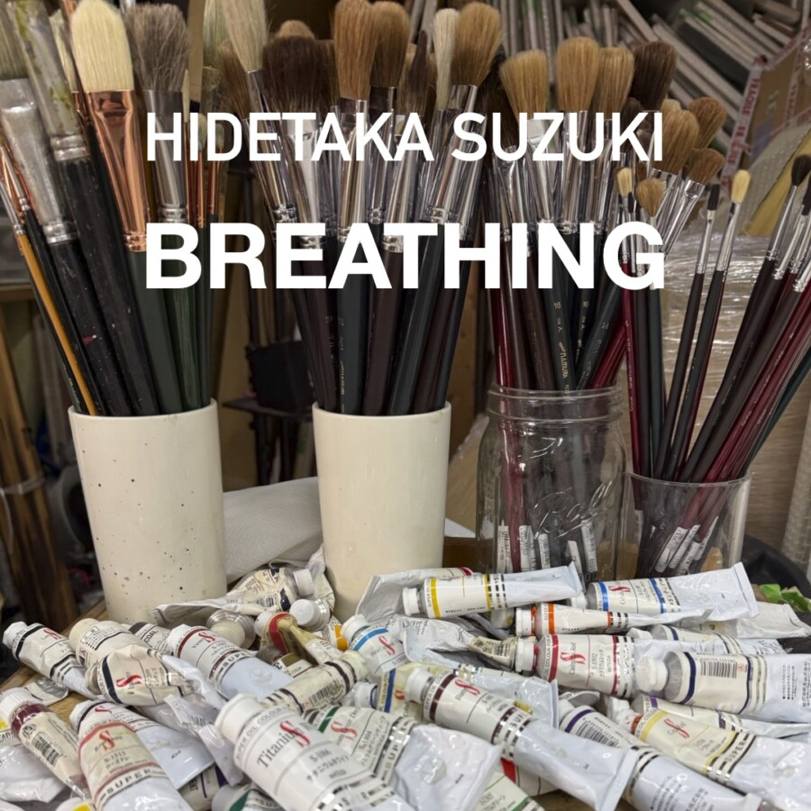

Hidetaka Suzuki: Breathing
Tokyo-based painter, Hidetaka Suzuki’s, work returns to Chicago after their US solo debut at Ackerman Clarke in 2023. The presentation offers nine new canvases and continues through Saturday, May 9th. Gallery hours are Wednesday-Saturday from 12-5pm CDT and by appointment.